from os.path import join as pjoin
import pandas as pd
import numpy as np
import seaborn as sns
import matplotlib.pyplot as pltData Access
Introduction to MICrONS Data Access

Electron Microscopy (EM) enables morphological reconstruction of neurons and detection of their synaptic connectivity . The MICrONS dataset is one of the largest datasets volume EM datasets currently available, and spans all layers of visual cortex. We will be using this dataset to query the connectivity between neurons in the visual cortex.
Begin with importing python packages:
CAVE account setup
In order to manage server traffic, every user needs to create a CAVE account and download a user token to access CAVE’s services programmatically. The CAVE infrastructure can be read about in more detail in the CAVE Paper.
The MICrONS data is publicly available which means that no extra permissions need to be given to a new user account to access the data. Bulk downloads of some static data are also available without an account on MICrONs Explorer.
A Google account (or Google-enabled account) is required to create a CAVE account.
Go to: https://global.daf-apis.com/auth/api/v1/user/token to view a list of your existing tokens
If you have never made a token before:
- go here: https://global.daf-apis.com/sticky_auth/api/v1/tos/2/accept to accept terms of service
- then go here https://global.daf-apis.com/auth/api/v1/create_token to create a new token.
%%capture
!uv pip install caveclient
!uv pip install cloud-volume
!uv pip install ossifyfrom caveclient import CAVEclient
my_token = "MY_TOKEN"
client = CAVEclient("minnie65_public", auth_token=my_token)Optional: Setup a persisent token for CAVE authentication
Cloud versions: colab.
If you have already set up a CAVE token secret as in this example, you can instead use:
from google.colab import userdata
import caveclient
client = caveclient.CAVEclient('minnie65_public',
auth_token=userdata.get('CAVE_TOKEN'))Local versions: Jupyter or VScode
If you are running this on your local machine rather than colab, you may also store the token on your machine. This makes future access easier as you do not have to specify the token.
client.auth.save_token(token=my_token, overwrite=True)
And thereafter initialize CAVE with:
client = CAVEclient("minnie65_public")The python package ossify provides skeleton downloading, processing, analysis, and many convenience functions. Including loading cells directly from connectomics databases using CAVEclient. For documentation, see Ossify.
And cloud-volume translates the complicated three-dimensional neuron objects you see in neuroglancer into arrays and meshes for you to work with analytically.
We will import these later as needed.
Part 1: Neuron morphology: representing neurons as skeletons
Often in thinking about neurons, you want to measure things along a linear dimension of a neuron.
However, the segmentation and meshes are a complex 3D shape that makes this non-trivial. There are methods for reducing the shape of a segmented neuron down to a linear tree like structure usually referred to as a skeleton. CAVE Skeleton Service automatically generates skeletons for a large number of cells in the dataset, and make the skeleton generation available on demand.
Note: The meshes you see in Neuroglancer are available to download through the python client cloud-volume, and can be loaded for analysis and visualization in other tools. This is useful for some types of analysis (and for making beautiful renders of neurons), but we will not cover that in this course.
Now we will select one neuron based on its root_id, the 18-digit number you see in neuroglancer, for example from: > https://spelunker.cave-explorer.org/#!gs://microns-static-links/mm3/layer5_thick_tufted.json
Instructor modifications/additions: You can ask students to try this with different root ids or defined list from Dash Apps to look at and discuss morphology. If you dont have a list then students can also query proofread list and plot some skeletons (but this would need them to define a list.
import ossify
# Load basic cell (skeleton + L2 graph)
root_id = 864691135774053371 # known Layer 2/3 cell at v1718
cell = ossify.load_cell_from_client(
root_id=root_id,
client=client,
)
print(f"Loaded cell {cell.name}")
print(f"Skeleton: {cell.skeleton.n_vertices} vertices")
print(f"Graph: {cell.graph.n_vertices} L2 vertices")Loaded cell 864691135774053371
Skeleton: 4893 vertices
Graph: 11542 L2 vertices# @title Figure 1: Skeleton representation in 2D
# Plot different 2D projections
projections = ["xy", "zy"] # , 'xz']
fig, axes = plt.subplots(1, 2, figsize=(10, 4), dpi=150)
for i, proj in enumerate(projections):
ossify.plot.plot_morphology_2d(
cell,
projection=proj,
color="compartment",
palette={1: 'navy', 2: 'tomato', 3: 'black'}, # color scheme for axon, dendrite
ax=axes[i]
)
axes[i].set_title(f"Projection: {proj}")
axes[i].set_ylabel(f"(nm)")
axes[i].set_xlabel(f"(nm)")
axes[i].set_aspect("equal")
axes[0].set(xlabel='X, medial-lateral (nm)', ylabel='Y, depth (nm)')
axes[1].set(xlabel='X, anterior-posterior (nm)', ylabel='Y, depth (nm)')
sns.despine()
plt.tight_layout()
plt.show()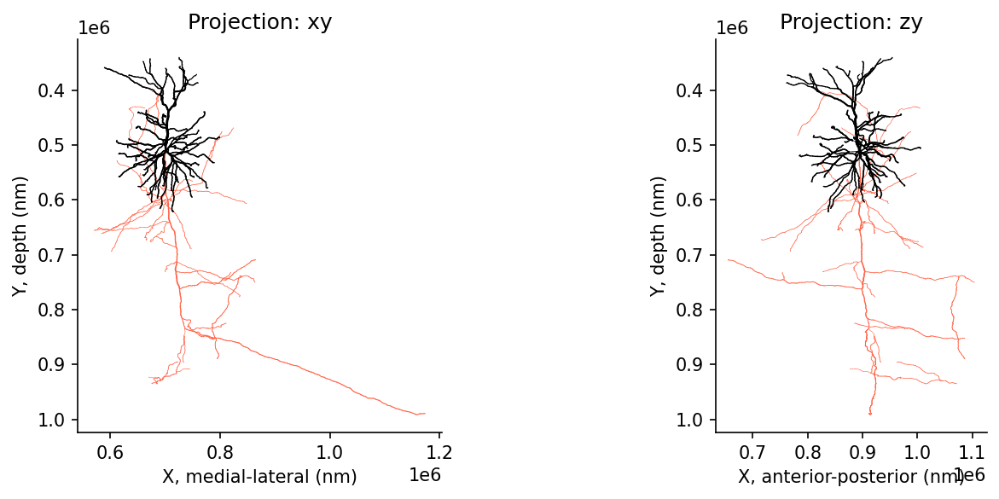
The compartment labels here are: black for dendrites, and tomato for axon.
Transformed coordinate system
A note on the coordinate system: the MICrONS raw data you see in neuroglancer is in ‘real’ Voxel space where each coordinate is in the thousands. Not only are these units large, the offset is arbitrary and it would make much more sense to anchor y=0 to the pial surface. But when working with data analysis, we want a more comprehensible numbers for comparison.
The skeleton above is plotted in nanometer coordinates, which differs from neuroglancer. In general, there are three types of coordinates you may encounter and it is worth being deliberate in which system you use.
- Voxel coordinates are the coordinates of a point in the original image volume. These are the coordinates that are used to index into the volumes you can see in Neuroglancer, but each number has a potentially different unit. In the MICrONs data, a voxel is 4 nm wide in the x and y directions, and 40 nm long in the z direction. This means that a 1x1x1 micron cube would be represented by a 250x250x25 voxel span. Annotations (such as synapses) are stored in voxel coordinates.
- Nanometer coordinates are the coordinates of a point in the original image volume, but in nanometers. This is equivalent to the voxel coordinate multiplied by the voxel resolution, with no further transformation applied. Mesh and skeleton vertices are stored in nanometer coordinates.
- Transformed coordinates reflect a trasnsformation that has been applied to the original image volume. This transformation is a rotation to make the pia surface as flat as possible, a translation to move the pial surface to y=0, and a scaling to bring coordinates into microns. Transformed coordinates are convenient for more accurate computations of depth and the pia-to-white-matter axis, but are not stored by default.For documentation, see Standard Transform.
Adding synapse positions to skeleton
Synapses are automatically detected and assigned in the dataset. That means we ‘know’ all of the inputs to and outputs from our cell of interest. Let’s collect that data:
Note this cell takes about a minute to run. It is pulling more data than the previous code load_cell call
# Load skeleton with synaptic features
root_id = 864691135774053371 # known Layer 2/3 cell at v1718
cell = ossify.load_cell_from_client(
root_id=root_id,
client=client,
synapses=True, # optional argument to load synapses with skeleton
include_partner_root_id=True, # optional argument to load partner root ids with synapses
)
print(f"Loaded cell {cell.name}")
print(f"Skeleton: {cell.skeleton.n_vertices} vertices")
print(f"Graph: {cell.graph.n_vertices} L2 vertices")
# All annotations in the cell
cell.annotations.describe()Loaded cell 864691135774053371
Skeleton: 4893 vertices
Graph: 11542 L2 vertices
# Annotations (2)
├── pre_syn (PointCloudLayer)
│ ├── 383 vertices
│ ├── features: [created, deleted, post_pt_position_x, post_pt_position_y, post_pt_position_z, post_pt_root_id,
│ post_pt_supervoxel_id, pre_pt_l2_id, pre_pt_position_x, pre_pt_position_y, pre_pt_position_z, pre_pt_root_id,
│ pre_pt_supervoxel_id, size]
│ └── Links: graph <-> pre_syn
└── post_syn (PointCloudLayer)
├── 4794 vertices
├── features: [created, deleted, post_pt_l2_id, post_pt_position_x, post_pt_position_y, post_pt_position_z,
│ post_pt_root_id, post_pt_supervoxel_id, pre_pt_position_x, pre_pt_position_y, pre_pt_position_z, pre_pt_root_id,
│ pre_pt_supervoxel_id, size]
└── Links: graph <-> post_syn# Synapse dataframe attached to skeleton
pre_syn_df = cell.annotations.pre_syn.nodes
post_syn_df = cell.annotations.post_syn.nodes
# return the available columns to line
pre_syn_df.columnsIndex(['created', 'deleted', 'pre_pt_position_x', 'pre_pt_position_y',
'pre_pt_position_z', 'post_pt_position_x', 'post_pt_position_y',
'post_pt_position_z', 'ctr_pt_position_x', 'ctr_pt_position_y',
'ctr_pt_position_z', 'size', 'pre_pt_supervoxel_id', 'pre_pt_root_id',
'post_pt_supervoxel_id', 'post_pt_root_id', 'pre_pt_l2_id'],
dtype='object')# @title Figure 2: Skeleton with synaptic inputs and outputs
fig, ax = plt.subplots(1, 2, figsize=(10, 4), dpi=150)
for i in range(2):
ossify.plot.plot_morphology_2d(cell,
projection="xy",
color="compartment",
palette={1: 'navy', 2: 'tomato', 3: 'black'},
ax=ax[i])
# Output synapses
sns.scatterplot(data=pre_syn_df, x="ctr_pt_position_x", y="ctr_pt_position_y",
s=3, color="darkviolet", ax=ax[0], edgecolor=None, zorder=100)
ax[0].text(.65,.75,f'{len(pre_syn_df)} total', color='darkviolet', transform = ax[0].transAxes)
# Input synapses
sns.scatterplot(data=post_syn_df, x="ctr_pt_position_x", y="ctr_pt_position_y",
s=3, color="teal", ax=ax[1], edgecolor=None, zorder=100)
ax[1].text(.65,.75,f'{len(post_syn_df)} total', color='teal', transform = ax[1].transAxes)
ax[0].set(title="Output Synapses", xlabel='X, medial-lateral (nm)', ylabel='Y, depth (nm)')
ax[1].set(title="Input Synapses", xlabel='X, medial-lateral (nm)', ylabel='Y, depth (nm)')
sns.despine()
plt.show()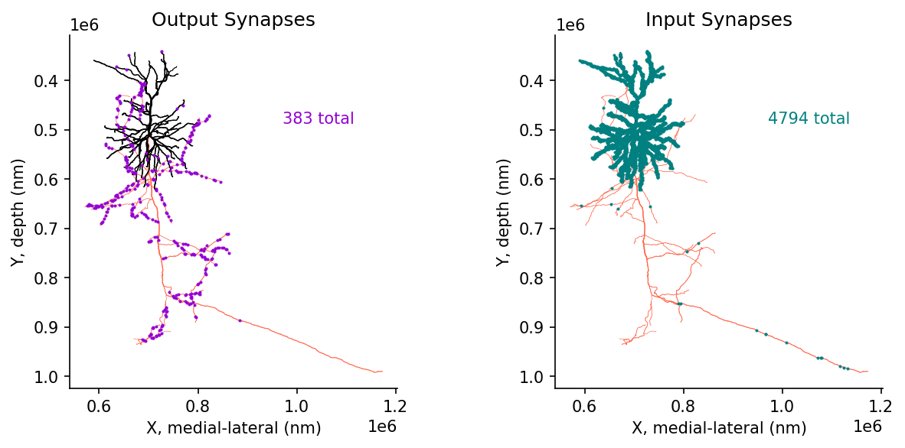
Examine the synapses for a cell of interest
Now we have all the inputs and outputs to thise cell.
pre_syn_df.head()[['pre_pt_root_id','post_pt_root_id','size','ctr_pt_position_x','ctr_pt_position_y','ctr_pt_position_z']]| pre_pt_root_id | post_pt_root_id | size | ctr_pt_position_x | ctr_pt_position_y | ctr_pt_position_z | |
|---|---|---|---|---|---|---|
| id | ||||||
| 166117160 | 864691135774053371 | 864691136813865843 | 16400.0 | 725976 | 637136 | 939920 |
| 169400050 | 864691135774053371 | 864691136053342195 | 31012.0 | 719064 | 686056 | 1009920 |
| 131397678 | 864691135774053371 | 864691135616414057 | 6288.0 | 642528 | 444664 | 961200 |
| 140645129 | 864691135774053371 | 864691135278991265 | 8556.0 | 666712 | 673752 | 716480 |
| 188081937 | 864691135774053371 | 864691135448157330 | 668.0 | 774584 | 535336 | 938680 |
We could also have gotten the same thing (synapses for our cell of interest), without getting the skeleton, as follows:
# Inputs synapses: Query synapse table with synapse_query()
post_syn_df = client.materialize.synapse_query(post_ids=root_id)
# Output synapses: Query synapse table with synapse_query()
pre_syn_df = client.materialize.synapse_query(pre_ids=root_id)
The synapse_query function allows you to query the synapse table in a more convenient way than most other tables. In particular, the pre_ids and post_ids let you specify which root id (or collection of root ids) you want to query, with pre_ids indicating the collection of presynaptic neurons and post_ids the collection of postsynaptic neurons.
Using both pre_ids and post_ids in one call is effectively a logical AND, returning only those synapses from neurons in the list of pre_ids that target neurons in the list of post_ids.
Note that synapse queries always return the list of every synapse between the neurons in the query, even if there are multiple synapses between the same pair of neurons.
A common pattern to generate a list of connections between unique pairs of neurons is to group by the root ids of the presynaptic and postsynaptic neurons and then count the number of synapses between them. For example, use pandas.groupby() to get the number of synapses from this neuron onto every other neuron:
# get count of synapses between presynaptic and postsynaptic partners
output_connectivity = (pre_syn_df.groupby(['pre_pt_root_id', 'post_pt_root_id'])
.count()[['size']]
.rename(columns={'size': 'syn_count'})
.sort_values( by='syn_count', ascending=False,)
)
output_connectivity
# Note that the 'size' part here is just a way to quickly extract one column. This could be any of the remaining column names.| syn_count | ||
|---|---|---|
| pre_pt_root_id | post_pt_root_id | |
| 864691135774053371 | 864691136040742142 | 4 |
| 864691135512497360 | 3 | |
| 864691136330880234 | 3 | |
| 864691136268801012 | 3 | |
| 864691135478095016 | 3 | |
| ... | ... | |
| 864691136619344859 | 1 | |
| 864691136813865843 | 1 | |
| 864691136814419571 | 1 | |
| 864691136904616882 | 1 | |
| 864691136905458866 | 1 |
341 rows × 1 columns
Student task: copy the pre_pt_root_id and top post_pt_root_id into neuroglancer. Can you find one of the synapses between them? How long did it take you? Wouldn’t it be so much easier if you know exactly the point where the synapse is already?
Hint: client.materialize.synapse_query above returns the position information in voxel coordinates (same as neuroglancer)
Student task: Can you create a dataframe/list of inputs to this specific neuron?
# get count of synapses between presynaptic partners
input_connectivity = (post_syn_df.groupby(['pre_pt_root_id', 'post_pt_root_id'])
.count()[['size']]
.rename(columns={'size': 'syn_count'})
.sort_values( by='syn_count', ascending=False,)
)
input_connectivity| syn_count | ||
|---|---|---|
| pre_pt_root_id | post_pt_root_id | |
| 864691135562001633 | 864691135774053371 | 18 |
| 864691135720572977 | 864691135774053371 | 17 |
| 864691135939776309 | 864691135774053371 | 17 |
| 864691136330880234 | 864691135774053371 | 16 |
| 864691136906077106 | 864691135774053371 | 11 |
| ... | ... | ... |
| 864691137056216950 | 864691135774053371 | 1 |
| 864691134232089491 | 864691135774053371 | 1 |
| 864691137199008321 | 864691135774053371 | 1 |
| 864691137199605569 | 864691135774053371 | 1 |
| 864691137199832129 | 864691135774053371 | 1 |
4102 rows × 1 columns
Proofreading considerations for inputs vs outputs
As you saw when exploring the data, there are many reconstruction ‘errors’ or artifacts in the data. Some of these are ‘merge’ errors where multiple axons are merged together, or a glial cell is merged to a neurite.
Some of these are ‘truncation’ errors, where the axon ends before it should be. These two kinds of errors impact analysis differently. While split errors reduce the number of correct synaptic connections, merge errors add incorrect connections.
The frequency of errors is roughly related to the size, and so axons and dendrites have extremely different error profiles. Dendrites, because they are thicker, are largely correct. Most dendrites in the dataset are connected to their soma.
In contrast, axons, because they are thinner, have many more errors of both kinds. Most axons in the dataset are NOT connected to their soma, without manual proofreading.
Let’s look at what that asymmetry means for what we know about our neuron’s inputs and outputs:
# get the root_ids that have a "known" soma
soma_df= client.materialize.views.nucleus_detection_lookup_v1().query(
select_columns = ['id','pt_root_id']
)
# Filter output synapses to known postsynaptic cells
pre_syn_to_known_df = pre_syn_df.loc[pre_syn_df.post_pt_root_id.isin(soma_df.pt_root_id)]
# Filter input synapses from known postsynaptic cells
post_syn_from_known_df = post_syn_df.loc[post_syn_df.pre_pt_root_id.isin(soma_df.pt_root_id)]# @title Figure 3: Skeleton with inputs and outputs, filtered by 'known' connections
fig, ax = plt.subplots(1, 2, figsize=(10, 4), dpi=150)
point_size = 3
for i in range(2):
ossify.plot.plot_morphology_2d(cell,
projection="xy",
color="compartment",
palette={1: 'navy', 2: 'tomato', 3: 'black'},
ax=ax[i])
# Output synapses
sns.scatterplot(data=pre_syn_df, x="ctr_pt_position_x", y="ctr_pt_position_y",
s=point_size, color="lightgrey", ax=ax[0], edgecolor=None, zorder=100)
sns.scatterplot(data=pre_syn_to_known_df, x="ctr_pt_position_x", y="ctr_pt_position_y",
s=point_size, color="darkviolet", ax=ax[0], edgecolor=None, zorder=100, alpha=0.5)
ax[0].text(.6,.75,f'{len(pre_syn_df)} total', color='lightgrey', transform = ax[0].transAxes)
ax[0].text(.6,.7,f'{len(pre_syn_to_known_df)} to known', color='darkviolet', transform = ax[0].transAxes)
# Input synapses
sns.scatterplot(data=post_syn_df, x="ctr_pt_position_x", y="ctr_pt_position_y",
s=point_size, color="lightgrey", ax=ax[1], edgecolor=None, zorder=100)
sns.scatterplot(data=post_syn_from_known_df, x="ctr_pt_position_x", y="ctr_pt_position_y",
s=point_size, color="teal", ax=ax[1], edgecolor=None, zorder=100, alpha=0.5)
ax[1].text(.6,.75,f'{len(post_syn_df)} total', color='lightgrey', transform = ax[1].transAxes)
ax[1].text(.6,.7,f'{len(post_syn_from_known_df)} from known', color='teal', transform = ax[1].transAxes)
ax[0].set(title="Output Synapses", xlabel='X, medial-lateral (nm)', ylabel='Y, depth (nm)')
ax[1].set(title="Input Synapses", xlabel='X, medial-lateral (nm)', ylabel='Y, depth (nm)')
sns.despine()
plt.show()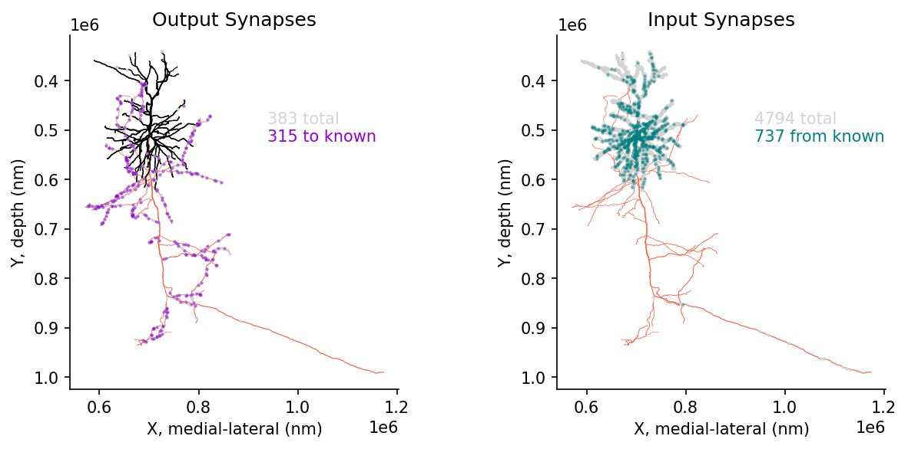
Synapse target compartment
Different synapses can target different compartments on the post synaptic cell: dendritic spine, dendritic shaft, or soma.

Synapses on a dendritic spine effect the membrane potential of a much smaller, isolated volume that decays to baseline slower. And so excitatory (glutamatergic) inputs have the possibility of ‘summating’ with multiple inputs nearby into a larger membrane potential that may initiate an action potential.
Whereas synapses onto the soma of neurons are especially strong for ‘shunting’ membrane potential, stopping axons potentials from triggering, and are almost exlusively inhibitory (GABAergic) synapses.
These annotaitons are available as CAVE table: synapse_target_predictions_ssa_v2.
Let’s visualize this for out example Layer 2/3 neuron from Part 1:
The basic querying logic of CAVE is client.materialize.tables. This takes a table of interest, for us synapse_target_predictions_ssa_v2 and queries the information requested from the server:
# Synapse dataframe attached to skeleton
pre_syn_df = cell.annotations.pre_syn.nodes
post_syn_df = cell.annotations.post_syn.nodes
# Add spine information to outputs
output_synapse_tags = client.materialize.tables.synapse_target_predictions_ssa_v2(id=pre_syn_df.index).query(
select_columns={'synapses_pni_2': ['id'], # reference id for synapse table
'synapse_target_predictions_ssa_v2': ['tag'], # compartment label
}
).set_index('id')
pre_syn_df = (pre_syn_df.merge(output_synapse_tags, left_index=True, right_index=True, how='left')
.rename(columns={'tag': 'Target'})
.fillna({'Target': 'none'})
)
# Add spine information to inputs
input_synapse_tags = client.materialize.tables.synapse_target_predictions_ssa_v2(id=post_syn_df.index).query(
select_columns={'synapses_pni_2': ['id'], # reference id for synapse table
'synapse_target_predictions_ssa_v2': ['tag'], # compartment label
}
).set_index('id')
post_syn_df = (post_syn_df.merge(input_synapse_tags, left_index=True, right_index=True, how='left')
.rename(columns={'tag': 'Target'})
.fillna({'Target': 'none'})
)# @title Figure 4: Synaptic target compartments: spine, shaft, soma
fig, ax = plt.subplots(1, 2, figsize=(10, 4), dpi=150)
point_size = 3
for i in range(2):
ossify.plot.plot_morphology_2d(cell,
projection="xy",
color="compartment",
palette={1: 'navy', 2: 'dimgrey', 3: 'black'},
ax=ax[i])
# Output synapses
sns.scatterplot(data=pre_syn_df, x="ctr_pt_position_x", y="ctr_pt_position_y",
s=point_size, hue='Target', hue_order=['spine','shaft','soma','none'],
palette={'spine': 'deeppink','shaft': 'gold', 'soma':'cyan', 'none': 'lightgrey'},
ax=ax[0], edgecolor=None, zorder=100)
# Input synapses
sns.scatterplot(data=post_syn_df, x="ctr_pt_position_x", y="ctr_pt_position_y",
s=point_size, hue='Target', hue_order=['spine','shaft','soma','none'],
palette={'spine': 'deeppink','shaft': 'gold', 'soma':'cyan', 'none': 'lightgrey'},
ax=ax[1], edgecolor=None, zorder=100)
ax[0].set(title="Output Synapses", xlabel='X, medial-lateral (nm)', ylabel='Y, depth (nm)')
ax[1].set(title="Input Synapses", xlabel='X, medial-lateral (nm)', ylabel='Y, depth (nm)')
sns.despine()
plt.show()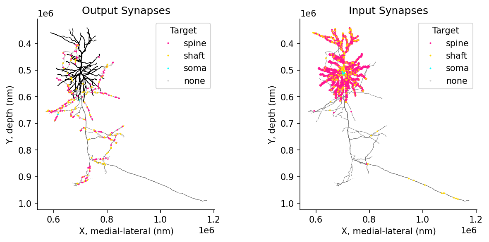
Part 2: Synaptic Connectivity
Above we looked at one neuron and its synapses in isolation. Now we are going to think about many synapses, from many neurons across the population
Note on data access: To speed up of this analysis, we already collected some of the data needed for this exercise from the database. We have made it available as versioned files that can be read with pandas. A separate preprocessing notebook shows how to use CAVEclient to generate the files used in this notebook.
materialization_version = 1718 # Current public as of March 2026
data_url = "https://github.com/AllenInstitute/connectomics_at_cosyne/raw/refs/heads/main/docs/resources/data"
# Load the curated cell types table
cell_types_df = pd.read_csv(pjoin(data_url, f'v{materialization_version}_cell_info.csv'))Visualize axon-proofread cells in the dataset
When we are talking about connectivity between two neurons in the MICrONS dataset, we require that the ‘input’ neuron, the postsynaptic neuron, be proofread. As described above, the frequency of errors is roughly related to the size. Dendrites are largely correct. We can trust the inputs to most dendrites in the dataset are connected to their soma.
Axons, because they are thinner, have many more errors. Here we only analyze those out outputs with manual proforeading. Fortunately, there are thousands of proofread cells in this dataset!
# @title Figure 5: Spatial position of neurons in MICrONS
fig, ax = plt.subplots(2,1, figsize=(8, 6),dpi=150, sharex=True)
# Added a labeled column for ease of plotting
cell_types_df['Status'] = 'None'
cell_types_df.loc[cell_types_df.status_axon, 'Status'] = 'Proofread'
cell_types_df.loc[cell_types_df.is_column, 'Status'] = 'Proofread-column'
cell_types_df = cell_types_df.sort_values('Status')
# Plot xz-view (top down)
sns.scatterplot(cell_types_df,
x='pt_position_x_tform',
y='pt_position_z_tform',
hue='Status',
hue_order = ['None', 'Proofread', 'Proofread-column'],
palette={'Proofread-column': 'indigo', 'Proofread': 'darkorchid', 'None': 'lightgrey'},
s=3,
alpha=0.5,
ax=ax[0]
)
# Plot xy-view (coronal)
sns.scatterplot(cell_types_df,
x='pt_position_x_tform',
y='pt_position_y_tform',
hue='Status',
hue_order = ['None', 'Proofread', 'Proofread-column'],
palette={'Proofread-column': 'indigo', 'Proofread': 'darkorchid', 'None': 'lightgrey'},
s=3,
alpha=0.5,
ax=ax[1]
)
sns.despine()
ax[1].invert_yaxis()
ax[0].set(xlabel='Medial--Lateral (um)', ylabel='Posterior--Anterior (um)')
ax[1].set(xlabel='Medial--Lateral (um)', ylabel='Depth (um)')
ax[0].set_aspect("equal")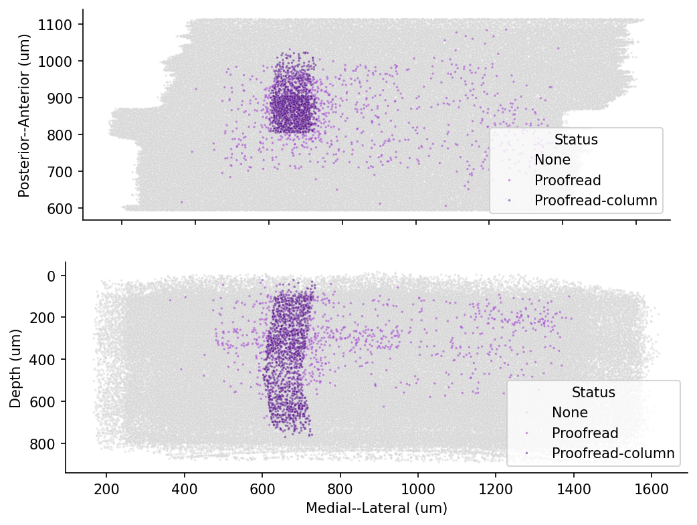
Synapse information
There are 337 million synapses in the MICrONS dataset.
We have collected all of the input and output synapses for the proofread cells in version 1718 (March 2026). If you are interested in working with this dataset in the future, we added a preprocessing notebook that shows how the data was queried.
Note that synapse queries always return the list of every synapse between the neurons in the query, even if there are multiple synapses between the same pair of neurons. A common pattern to generate a list of connections between unique pairs of neurons is to group by the root ids of the presynaptic and postsynaptic neurons and then count the number of synapses between them.
Here we will load all Proofread-to-Proofread connections within the V1 column, a small subset of the dataset.
column_synapses = pd.read_feather(pjoin(data_url, f'v{materialization_version}_v1_column_synapses.feather'))
column_synapses.shape(146711, 6)Connectivity matrix
The synapses of neurons create a network of connections. One way of visualizing this connectivity is in a matrix. Pandas provides the pivot_table function that we can use to make a matrix out of the tabular synapse data. For now, we will limit ourselves to the synapses between the proofread-column neurons.
Note: Each synapses has a size value assigned to it. How to aggregate the sizes from multiple synapes between two neurons depends on the research question. For now we ignore both synapse size and synapse count, and treat connection strength as binary: connected or not-connected
# matrix of synapse counts
syn_mat_binary = column_synapses.pivot_table(index="pre_pt_root_id", columns="post_pt_root_id",
values="size", aggfunc=lambda x: (np.sum(x) > 0)).fillna(0)
# Make sure matrix is quadratic
syn_mat_binary = syn_mat_binary.reindex(columns=np.array(syn_mat_binary.index)).astype(float)
row_indices, column_indices = np.nonzero(syn_mat_binary)# @title Figure 6: Binary connectivity matrix (column-to-column)
fig, ax = plt.subplots(figsize=(8, 4), dpi=150)
sns.heatmap(syn_mat_binary, cmap="gray_r", xticklabels=[], yticklabels=[],
ax=ax, square=True,
cbar_kws={"label": "Binary Connectivity", "ticks": [0, 1]})
n_edges = len(row_indices)
n_possible_edges = syn_mat_binary.shape[0] * syn_mat_binary.shape[1]
print(f"Number of edges: {n_edges}")
print(f"Number of possible edges: {n_possible_edges}")
print(f"Fraction of possible edges: {n_edges / n_possible_edges:.4f}")Number of edges: 78928
Number of possible edges: 1836025
Fraction of possible edges: 0.0430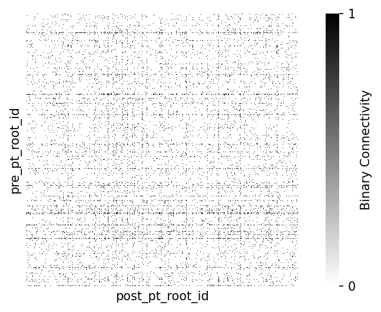
Consider: different measures of synaptic strength
When creating a connectivity matrix, how you measure synaptic strength can make a difference in your analysis. For 3 common ways of reporting connection strength:
- Binary connectivity: whether two cells are connected at all, as shown above.
-
Synaptic count: the total number of synapses that are part of the connection. This is typical of the Fly connectome where
countcaptures much of the connection diversity. The modalcountin mouse cortex is much lower. -
Synaptic size: the size of the postsynaptic density at every connection, generally aggregated as
sumormeanfor each unique connection.
We will explore these nuances in more detail in Part 5
Part 3: Cell type tables
Identifying the putative ‘cell type’ from the EM morphology is a process that involves both manual and automatic classifications. Subsets of the dataset have been manually classified by anatomists at the Allen Institute, and these ground truth labels used to train and refine different automated ‘feature classifiers’ over time.
The diversity of manual and automated cell type classifications available in the dataset reflect the fact that definitions of ‘cell types’ in the dataset is an active area of research and must be contextualized against the purpose and resolution of the cell-typing being performed.
Using the automated cell types
Many of these automated cell type definitions were established and refined for the MICrONS Dataset including:
- Perisomatic cell features (Elabbady et al.)
- Morphology and connectivity features (Schneider-Mizell et al.)
-
Dendrite and spine multifeature model. The process of applying these labels is ongoing, but is available in CAVE from the
cell_type_multifeature_combotable which labels cell types according to using soma, nucleus, dendrite, and spine features. These are colated in themeso_typecolumn of our cell types dataframe.
For this tutorial, we will use cell_types from the perisomatic cell features. Choose an alternate cell type classification at your discretion.
Note: Cells here without a label are NaN. These are either non-neuronal cells or potential neurons with large segmentation errors that did not pass quality check
cell_types_df.value_counts(['cell_type']).sort_index()cell_type
23P 19650
4P 14712
5P-ET 2149
5P-IT 7890
5P-NP 932
6P-CT 6770
6P-IT 11651
BC 3354
BPC 1494
MC 2469
NGC 588
OPC 1422
astrocyte 6898
microglia 2358
oligo 6901
pericyte 374
Name: count, dtype: int64Excitatory cells were separated into laminar sub-classes: L23 (implied IT), L4 (implied IT), 3 sub-types of layer 5 cells (ET, IT, NP) and 2 classes of layer 6 cells (IT, CT).
Inhibitory cells were classified into morphological types: Bipolar (BPC), Basket (BC), Martinotti (MC), or Neurogliaform (NGC).
Non-neuronal cell types include: astrocytes, microglia, pericytes, oligodendrocytes (oligo), and oligodendrocyte precursor cells (OPC)
Cell Typing Features
Location vs depth
As a first analysis, we will plot the depth location vs the size of each cell nucleus. query_table has additional parameters to modify the results and standardize returns that make such an analysis easier. * Using desired_resolution the resolution of all position columns can be defined in nanometers. * Using split_positions, position columns are separate * Using select_columns returns only the columns you know you are interested in. Try uncommenting this line to make the table more readable
nucleus_df = client.materialize.query_table('nucleus_detection_v0',
desired_resolution=[1000, 1000, 1000], # returned in um
split_positions=True,
select_columns=['id','pt_root_id','volume','pt_position']
)
nucleus_df.sample(5)| id | pt_supervoxel_id | pt_root_id | volume | pt_position_x | pt_position_y | pt_position_z | |
|---|---|---|---|---|---|---|---|
| 21137 | 562947 | 109021045733819527 | 864691136091841972 | 289.622589 | 1288 | 835 | 923 |
| 63221 | 460576 | 100992687108820156 | 864691136237148943 | 67.86335 | 1054 | 647 | 1061 |
| 129781 | 291901 | 90994070486717947 | 864691135584572280 | 301.307007 | 762 | 460 | 608 |
| 131965 | 292082 | 90571308467225625 | 864691136237482511 | 310.07489 | 750 | 444 | 672 |
| 7045 | 155518 | 82763814642707850 | 864691135381131017 | 67.605789 | 522 | 547 | 920 |
The data is organized such that the y axis is roughly aligned with depth (there is a 5 degree tilt that can be adjusted with the standard_transform package; we will ignore that here for simplicity).
The plot represents spatial organization of cell nuclei in the tissue
# @title Figure 7: Spatial Organization of Cell Nuclei in the tissue
fig, ax = plt.subplots(figsize=(6, 6), dpi=150)
ax.tick_params(labelsize=14)
sns.scatterplot(data=nucleus_df, x="volume", y="pt_position_y", size=1, edgecolor=None, alpha=.01, color="k", ax=ax, legend=False)
ax.invert_yaxis()
ax.set_xlabel("Volume ($\mu m^3$)", fontsize=16)
ax.set_ylabel("Depth ($\mu m$)", fontsize=16)
ax.set_xlim(0, 500)
plt.show()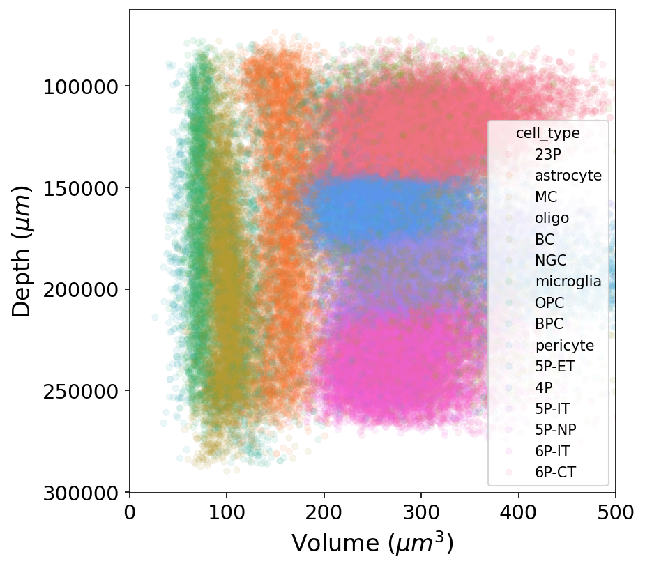
Cell types reveal structure in the data
When the cell type table contains the information about the nuclei, we can use it to plot the locations of all cell bodies as well and label them by type.
# @title Figure 7b: Spatial Organization of Cell Types (Excitatory, Inhibitory, non-neuronal) in the tissue
# merge cell nucleus size to cell type
if 'volume' not in cell_types_df.columns:
cell_types_df = cell_types_df.merge(nucleus_df[['id','volume']])
fig, ax = plt.subplots(figsize=(6, 6), dpi=150)
ax.tick_params(labelsize=14)
sns.scatterplot(data=cell_types_df.query("broad_type!='unknown'"),
x="volume", y="pt_position_y",
s=20, edgecolor=None, alpha=.1, color="k", ax=ax,
legend=True, hue="broad_type", )
ax.invert_yaxis()
ax.set_xlabel("Volume ($\mu m^3$)", fontsize=16)
ax.set_ylabel("Depth ($\mu m$)", fontsize=16)
ax.set_xlim(0, 500)
plt.show()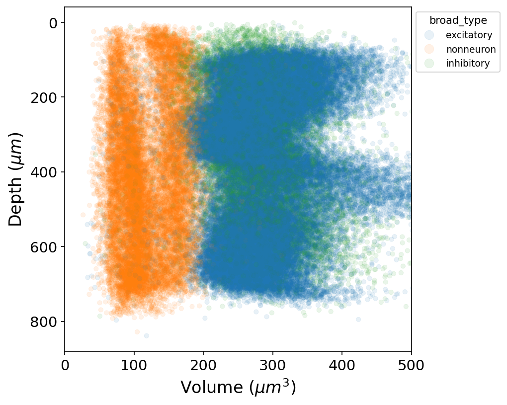
Student Task: Can you color a volume vs depth plot based on cell types?
Hint: look for the argument hue. It points to ‘broad_type’ above. What do you want it to point to instead?
fig, ax = plt.subplots(figsize=(6, 6), dpi=150)
ax.tick_params(labelsize=14)
sns.scatterplot(data=cell_types_df.query("cell_type!='unknown'"), x="volume", y="pt_position_y", s=20, edgecolor=None, alpha=.1, color="k", ax=ax,
legend=True, hue="cell_type")
ax.invert_yaxis()
ax.set_xlabel("Volume ($\mu m^3$)", fontsize=16)
ax.set_ylabel("Depth ($\mu m$)", fontsize=16)
ax.set_xlim(0, 500)
plt.show()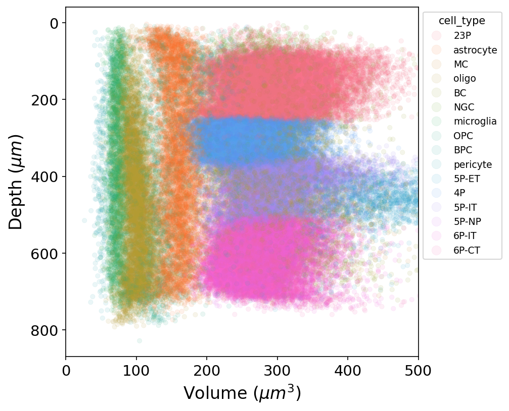
Student Task 2: Can you create a volume vs depth plot for a single cell type?
Hint: you can ‘filter’ your cell_types_df to include only certain cell types. For example here is both layer 23 and 4P cells:
cell_types_df[cell_types_df['cell_type'].isin(['23P', '4P'])]fig, ax = plt.subplots(figsize=(6, 6), dpi=150)
ax.tick_params(labelsize=14)
ct_df_filtered = cell_types_df[cell_types_df['cell_type'].isin(['23P', 'OPC'])]
sns.scatterplot(data=ct_df_filtered, x="volume", y="pt_position_y", s=20, edgecolor=None, alpha=.1, color="k", ax=ax,
legend=True, hue="cell_type")
ax.invert_yaxis()
ax.set_xlabel("Volume ($\\mu m^3$)", fontsize=16)
ax.set_ylabel("Depth ($\\mu m$)", fontsize=16)
ax.set_xlim(0, 500)
plt.show()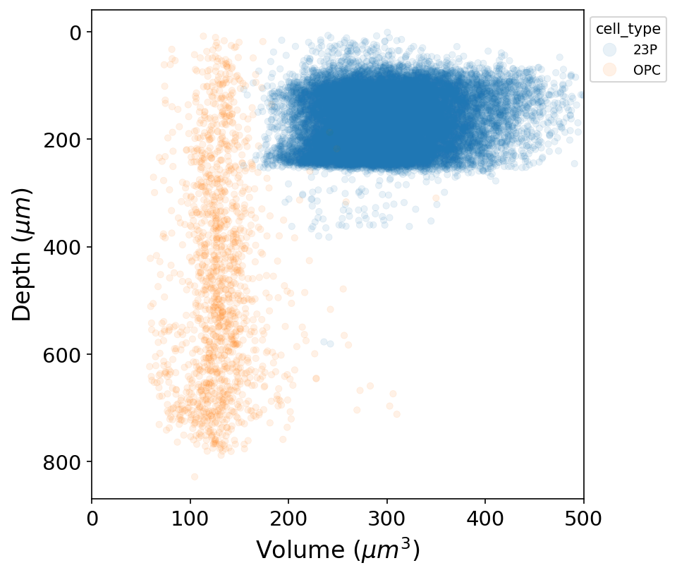
Student Task: Can you plot these data to look for distribution of all inhibitory and excitatory cell types, in separate polts?
Hint: you can filter on ‘broad_type’ instead of cell type.
cell_types_df.query("broad_type=='excitatory'")Hint: You can plot two plots, or put them side by side in a subplot with:
fig, axes = plt.subplots(1, 2,)
ax[0].plot_something
ax[1].plot_something
fig, axes = plt.subplots(1, 2, figsize=(12, 6), dpi=150, sharey=True)
# Excitatory cells
excitatory_cells_df = cell_types_df.query("broad_type=='excitatory'")
sns.scatterplot(data=excitatory_cells_df,
x="volume", y="pt_position_y",
s=20, edgecolor=None, alpha=.1, color="seagreen", ax=axes[0])
axes[0].invert_yaxis()
axes[0].set_xlabel("Volume ($\mu m^3$)", fontsize=16)
axes[0].set_ylabel("Depth ($\mu m$)", fontsize=16)
axes[0].set_xlim(0, 500)
axes[0].set_title("Excitatory Neurons (Volume vs. Depth)")
# Inhibitory cells
inhibitory_cells_df = cell_types_df.query("broad_type=='inhibitory'")
sns.scatterplot(data=inhibitory_cells_df,
x="volume", y="pt_position_y",
s=20, edgecolor=None, alpha=.1, color="firebrick", ax=axes[1])
axes[1].invert_yaxis()
axes[1].set_xlabel("Volume ($\mu m^3$)", fontsize=16)
axes[1].set_ylabel("Depth ($\mu m$)", fontsize=16) # Add ylabel for clarity
axes[1].set_xlim(0, 500)
axes[1].set_title("Inhibitory Neurons (Volume vs. Depth)")
sns.despine()
plt.tight_layout()
plt.show()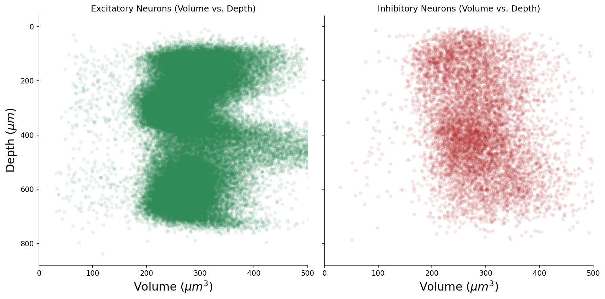
Part 4: Sorting the synapse matrix with cell types
Let’s combine the synaptic connecitivity with the cell type information. Below we provide logic for sorting a connectivity matrix using a list of labels.
# @title Helper function: sort_matrix_by_types
def sort_matrix_by_types(mat: pd.DataFrame,
labels: pd.DataFrame,
label_type_col: str = "cell_type_auto",
label_id_col: str = "pt_root_id",
post_labels: pd.DataFrame = None,
post_label_type_col: str = None,
post_label_id_col: str = None):
"""Sorts (synapse) matrix by labels.
This function assumes a square synapse matrix!
Args:
mat: synapse matrix as pandas DataFrame
labels: DataFrame with labels, e.g. the output of client.materialize.query_table('aibs_metamodel_celltypes_v661')
label_type_col: column name in labels for cell types
label_id_col: column name in labels for root ids
post_labels: DataFrame with labels, e.g. the output of client.materialize.query_table('aibs_metamodel_celltypes_v661')
post_label_type_col: column name in labels for cell types
post_label_id_col: column name in labels for root ids
Returns:
mat_sorted: sorted matrix
mat_labels: sorted labels; has the same length as matrix
"""
if post_labels is None:
post_labels = labels
if post_label_type_col is None:
post_label_type_col = label_type_col
if post_label_id_col is None:
post_label_id_col = label_id_col
mat_sorted = mat.copy()
pre_mat_labels = np.array(labels.set_index(label_id_col).loc[mat_sorted.index][label_type_col])
pre_sorting = np.argsort(pre_mat_labels)
post_mat_labels = np.array(post_labels.set_index(post_label_id_col).loc[mat_sorted.T.index][post_label_type_col])
post_sorting = np.argsort(post_mat_labels)
mat_sorted = mat_sorted.iloc[pre_sorting].T.iloc[post_sorting].T
return mat_sorted, pre_mat_labels[pre_sorting], post_mat_labels[post_sorting]# Sort the column connectivity
syn_mat = column_synapses.pivot_table(index="pre_pt_root_id", columns="post_pt_root_id",
values="size", aggfunc=lambda x: np.log(np.sum(x))).fillna(0)
syn_mat = syn_mat.reindex(columns=np.array(syn_mat.index)).astype(float)
# sort the matrix by cell types to render sensibly in heatmap
cell_types_df = cell_types_df.fillna({'cell_type': 'unknown', 'broad_type': 'unknown', 'meso_type': 'unknown'})
syn_mat_ct, syn_mat_cell_types, _ = sort_matrix_by_types(syn_mat, cell_types_df, label_type_col="cell_type")# @title Figure 8: Connectivity matrix sorted by cell type
# add colormap for cell type
cts, ct_idx = np.unique(syn_mat_cell_types, return_inverse=True)
ct_colors = plt.get_cmap("tab20")(ct_idx)
fig, ax = plt.subplots(figsize=(7, 5), dpi=150)
sns.heatmap(syn_mat_ct, cmap="gray_r", xticklabels=[], yticklabels=[],
ax=ax, square=True,
cbar_kws={"label": "Log sum synapse size (AU)"})
# Adding row and column colors for cell types
for i, color in enumerate(ct_colors):
ax.add_patch(plt.Rectangle(xy=(-0.01, i), width=0.01, height=1, color=color, lw=0,
transform=ax.get_yaxis_transform(), clip_on=False))
for i, color in enumerate(ct_colors):
ax.add_patch(plt.Rectangle(xy=(i, 1), height=0.01, width=1, color=color, lw=0,
transform=ax.get_xaxis_transform(), clip_on=False))
import matplotlib
# add a legend for the cell types
legend_elements = [matplotlib.lines.Line2D([0], [0], color=plt.get_cmap("tab20")(i), label=ct) for i, ct in enumerate(cts)]
plt.legend(handles=legend_elements, loc='upper left', bbox_to_anchor=(1.3, 1), title="cell types")
plt.show()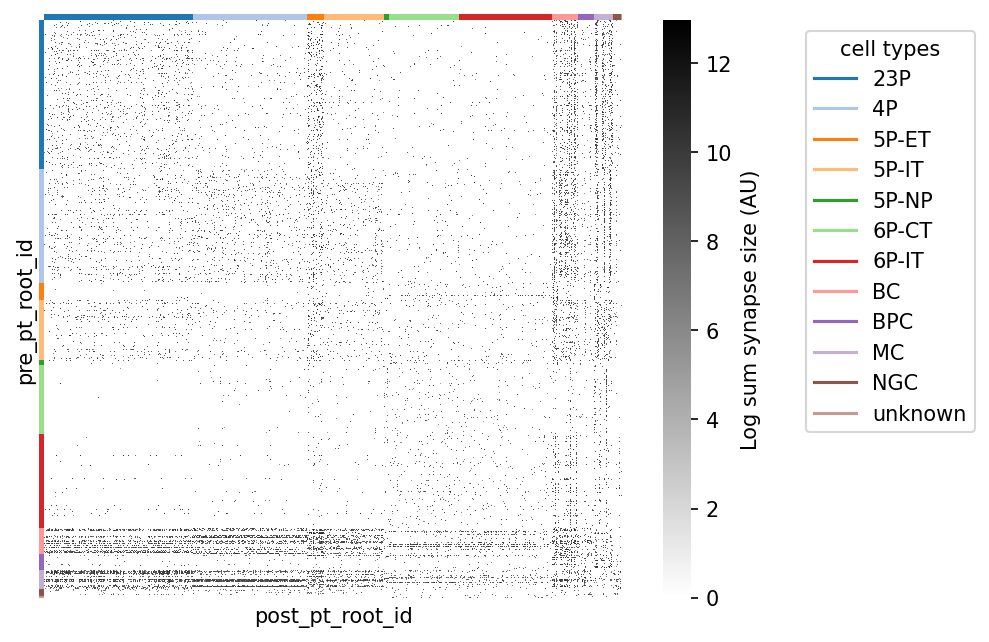
Supplementary Part 5: Nuances of connectivity
Up until now we have considered all synapses to be largely equivalent, a binary of connection between one cell and another cell. But this isn’t actually true!
We wil go through four considerations for connection strength
1. Synapse size
For us, synaptic size means extent of the the postsynaptic density at every connection, effectively the surface area of the synapse and a metric of the ‘active zone’ of neurotransmitter release.
Note: The size reported in the MICrONS dataset measures the synaptic cleft as segmented by the automated classifier in voxels (3d pixels, a measure of volume). These are correlated to anatomical measures such as synaptic area and spine head volumes (for excitatory synapses).
This is generally aggregated as sum or mean for each unique connection.
# extract only the synapses between excitatory-excitatory cells in the column
excitatory_root_ids = cell_types_df.query("broad_type=='excitatory'").pt_root_id.to_numpy()
# Filter synapse table for excitatory-excitatory connections
exc_exc_synapses = column_synapses.loc[(column_synapses.pre_pt_root_id.isin(excitatory_root_ids) &
column_synapses.post_pt_root_id.isin(excitatory_root_ids)
)]
np.shape(exc_exc_synapses)(36233, 6)# @title Figure 9: Synapse size excitatory-to-excitatory connections
fig, axs = plt.subplots(1, 2, figsize=(10, 4), dpi=150)
syn_mat = exc_exc_synapses.pivot_table(index="pre_pt_root_id", columns="post_pt_root_id",
values="size", aggfunc=lambda x: (np.sum(x))).fillna(0)
# Make sure matrix is quadratic
syn_mat = syn_mat.reindex(columns=np.array(syn_mat.index)).astype(float)
# collect the synaptic weights that are non-zero
row_indices, column_indices = np.nonzero(syn_mat)
edge_weights = syn_mat.to_numpy()[row_indices, column_indices]
# Histogram on linear-x
ax = axs[0]
sns.histplot(
edge_weights,
kde=True,
bins=100,
ax=ax,
log_scale=False,
facecolor='seagreen',
)
ax.spines[["top", "right"]].set_visible(False)
ax.set(xlabel="Sum synapse size (voxels)", ylabel="Number of connections")
# Histogram on log-x
ax = axs[1]
sns.histplot(
edge_weights,
kde=True,
bins=100,
ax=ax,
log_scale=True,
facecolor='seagreen',
)
ax.spines[["top", "right"]].set_visible(False)
ax.set(xlabel="Sum synapse size (voxels - log scale)", ylabel="Number of connections")[Text(0.5, 0, 'Sum synapse size (voxels - log scale)'),
Text(0, 0.5, 'Number of connections')]
Let’s replot the square matrix with the log of the sum of synapses sizes between each connected pair aggfunc=lambda x: np.log(np.sum(x))
# matrix of log-summed synapse size
syn_mat_logsum = column_synapses.pivot_table(index="pre_pt_root_id", columns="post_pt_root_id",
values="size", aggfunc=lambda x: np.log(np.sum(x))).fillna(0)
# Make sure matrix is quadratic
syn_mat_logsum = syn_mat_logsum.reindex(columns=np.array(syn_mat.index)).astype(float)# @title Figure 10: Connectivity matrix, with synaptic strength (column-to-column)
fig, ax = plt.subplots(figsize=(8, 4), dpi=150)
sns.heatmap(syn_mat_logsum, cmap="gray_r", xticklabels=[], yticklabels=[],
ax=ax, square=True,
cbar_kws={"label": "Log summed synapse size (AU)"})
row_indices, column_indices = np.nonzero(syn_mat_logsum)
n_edges = len(row_indices)
n_possible_edges = syn_mat_logsum.shape[0] * syn_mat_logsum.shape[1]
print(f"Number of edges: {n_edges}")
print(f"Number of possible edges: {n_possible_edges}")
print(f"Fraction of possible edges: {n_edges / n_possible_edges:.4f}")Number of edges: 58840
Number of possible edges: 1611095
Fraction of possible edges: 0.0365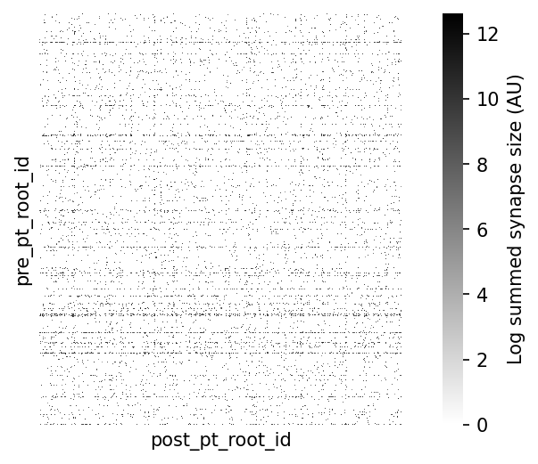
In mouse visual cortex, the diversity in Excitatory to excitatory connectivity is much more bimodal in synaptic size. However, the size of Inhibitory to excitatory synapses more unimodal and smaller than the excitatory synapses, on average.
# Filter synapse table for inhibitory-excitatory connections
inhibitory_root_ids = cell_types_df.query("broad_type=='inhibitory'").pt_root_id.to_numpy()
inh_exc_synapses = column_synapses.loc[(column_synapses.pre_pt_root_id.isin(inhibitory_root_ids) &
column_synapses.post_pt_root_id.isin(excitatory_root_ids)
)]
np.shape(inh_exc_synapses)(72765, 6)Student Task 1: Create the above Figure 9 for inhibitory to excitatory synapses (color firebrick) . Label this figure as Figure 9b.
Hint: we just extracted these synapses as inh_exc_synapses. You can do the same thing as for exc_exc_synapses in Figure 9 EXCEPT this matrix will not be quadratic (we have different cells on the x and y of the graph). Drop that line.
# @title Figure 9b: Synapse size inhibitory-to-inhibitory connections
fig, axs = plt.subplots(1, 2, figsize=(10, 4), dpi=150)
syn_mat = inh_exc_synapses.pivot_table(index="pre_pt_root_id", columns="post_pt_root_id",
values="size", aggfunc=lambda x: (np.sum(x))).fillna(0)
# This matrix will NOT be quadratic. this line is unnecessary
# syn_mat = syn_mat.reindex(columns=np.array(syn_mat.index)).astype(float)
# collect the synaptic weights that are non-zero
row_indices, column_indices = np.nonzero(syn_mat)
edge_weights = syn_mat.to_numpy()[row_indices, column_indices]
# Histogram on linear-x
ax = axs[0]
sns.histplot(
edge_weights,
kde=True,
bins=100,
ax=ax,
log_scale=False,
facecolor='firebrick',
)
ax.spines[["top", "right"]].set_visible(False)
ax.set(xlabel="Sum synapse size (voxels)", ylabel="Number of connections")
# Histogram on log-x
ax = axs[1]
sns.histplot(
edge_weights,
kde=True,
bins=100,
ax=ax,
log_scale=True,
facecolor='firebrick',
)
ax.spines[["top", "right"]].set_visible(False)
ax.set(xlabel="Sum synapse size (voxels - log scale)", ylabel="Number of connections")
plt.tight_layout()
plt.show()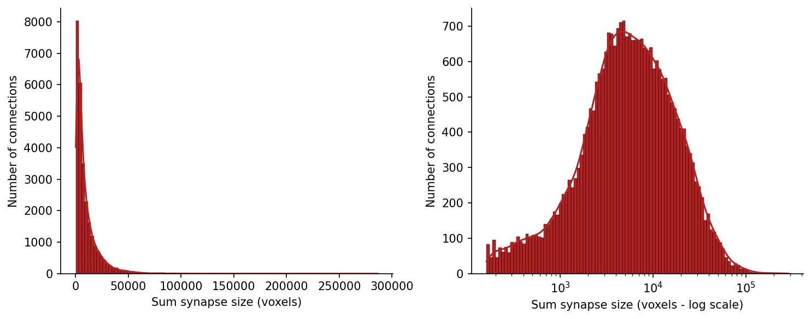
Student Task 1: Create the above Figure 9 for inhibitory to inhibitory synapses. Label this figure as Figure 9c
# Filter synapse table for inhibitory-inhibitory connections
inhibitory_root_ids = cell_types_df.query("broad_type=='inhibitory'").pt_root_id.to_numpy()
inh_inh_synapses = column_synapses.loc[(column_synapses.pre_pt_root_id.isin(inhibitory_root_ids) &
column_synapses.post_pt_root_id.isin(inhibitory_root_ids)
)]
np.shape(inh_inh_synapses)(9417, 6)2. Synapse count
This is the total number of synapses that are part of the connection. This is typical analysis in the the Fly connectome where count captures much of the connection diversity.
The modal count in mouse cortex is much lower.
# @title Figure 11: Synapse count per connection
# Count Histogram on linear-x
syn_mat = column_synapses.pivot_table(index="pre_pt_root_id", columns="post_pt_root_id",
values="size", aggfunc=lambda x: np.sum(x > 0)).fillna(0)
# Make sure matrix is quadratic
syn_mat = syn_mat.reindex(columns=np.array(syn_mat.index)).astype(float)
fig, ax = plt.subplots(figsize=(8, 4), dpi=150)
edge_weights = syn_mat.to_numpy()[row_indices, column_indices]
sns.histplot(
edge_weights,
discrete=True,
ax=ax,
)
ax.spines[["top", "right"]].set_visible(False)
ax.set(xlabel="Number of synapses per connection", ylabel="Number of connections")[Text(0.5, 0, 'Number of synapses per connection'),
Text(0, 0.5, 'Number of connections')]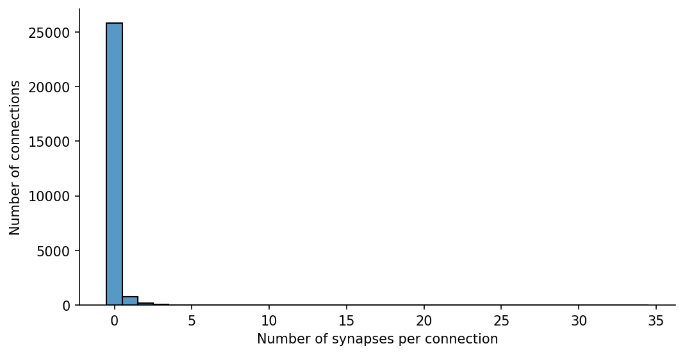
In other systems than mouse cortex, the number of synapses might be the more important measure (see Dorkenwald et al., 2022 for deeper dive into synapse size and counts).
However, in mouse cortex the modal number of Excitatory-to-excitatory connections is 1, while inhibitory-excitatory connections may be more varied
# @title Figure 12: Synapse count per connection differs for excitatory or inhibitory connections
fig, ax = plt.subplots(1,3, figsize=(15, 4),dpi=150, sharex=True)
syn_mat = exc_exc_synapses.pivot_table(index="pre_pt_root_id", columns="post_pt_root_id",
values="size", aggfunc=lambda x: np.sum(x > 0)).fillna(0)
# Make sure matrix is quadratic
syn_mat = syn_mat.reindex(columns=np.array(syn_mat.index)).astype(float)
row_indices, column_indices = np.nonzero(syn_mat)
edge_weights = syn_mat.to_numpy()[row_indices, column_indices]
sns.histplot(
edge_weights,
discrete=True,
ax=ax[0],
facecolor='seagreen',
)
syn_mat = inh_exc_synapses.pivot_table(index="pre_pt_root_id", columns="post_pt_root_id",
values="size", aggfunc=lambda x: np.sum(x > 0)).fillna(0)
## This matrix cannot be quadratic
# syn_mat = syn_mat.reindex(columns=np.array(syn_mat.index)).astype(float)
row_indices, column_indices = np.nonzero(syn_mat)
edge_weights = syn_mat.to_numpy()[row_indices, column_indices]
sns.histplot(
edge_weights,
discrete=True,
ax=ax[1],
facecolor='deepskyblue',
)
# Added code for Inhibitory-Inhibitory plot (Can be delegated as student task)
syn_mat = inh_inh_synapses.pivot_table(index="pre_pt_root_id", columns="post_pt_root_id",
values="size", aggfunc=lambda x: np.sum(x > 0)).fillna(0)
# Make sure matrix is quadratic
syn_mat = syn_mat.reindex(columns=np.array(syn_mat.index)).astype(float)
row_indices, column_indices = np.nonzero(syn_mat)
edge_weights = syn_mat.to_numpy()[row_indices, column_indices]
sns.histplot(
edge_weights,
discrete=True,
ax=ax[2],
facecolor='firebrick',
)
sns.despine()
ax[0].set(title='Excitatory-Excitatory', xlabel="Number of synapses per connection", ylabel="Number of connections")
ax[1].set(title='Inhibitory-Excitatory', ylabel=None)
ax[2].set(title='Inhibitory-Inhibitory', ylabel=None)
plt.tight_layout()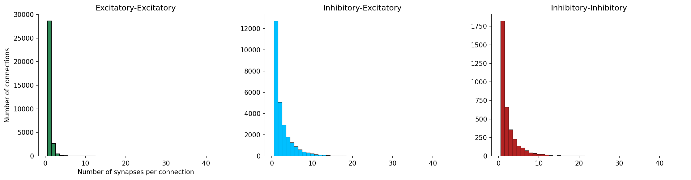
3. Synapse position and distance
Postsynaptic potentials onto to different dendritic compartments have to travel vastly different distances to reach the soma and ‘summate’ to trigger an action potential. This is something we can visualize by computing the distance from every synapse to its soma.
This is something Ossify is built to do, and can do it for our example Layer 2/3 neuron with two lines of code.
It’s been a while, so let’s retrieve the skeleton of our cell of interest:
import ossify
# Load skeleton with synaptic features
root_id = 864691135774053371 # known Layer 2/3 cell at v1718
cell = ossify.load_cell_from_client(
root_id=root_id,
client=client,
synapses=True, # optional argument to load synapses with skeleton
include_partner_root_id=True, # optional argument to load partner root ids with synapses
)
# Synapse dataframe attached to skeleton
pre_syn_df = cell.annotations.pre_syn.nodes
post_syn_df = cell.annotations.post_syn.nodes### Calculate synapse distance to root
# Convert annotations to positional indices for algorithm
post_syn_indices = cell.annotations.post_syn.map_index_to_layer(
"skeleton", as_positional=True
)
# compute distance to root for every annotation
distances_to_root = cell.skeleton.distance_to_root(post_syn_indices)
post_syn_df['distance_to_root'] = distances_to_root# @title Figure 13: Skeleton filtering and distance calculation
fig, ax = plt.subplots(1, 2, figsize=(10, 4), dpi=150)
with cell.skeleton.mask_context(cell.skeleton.features['compartment'] != 2) as dendrite_cell:
for i in range(2):
ossify.plot.plot_morphology_2d(dendrite_cell,
projection="xy",
color="compartment",
palette={1: 'navy', 2: 'dimgrey', 3: 'black'},
ax=ax[i])
dendrite_syn_ids= dendrite_cell.annotations.post_syn.nodes.index.to_numpy()
# Input synapses
sns.scatterplot(data=post_syn_df.loc[post_syn_df.index.isin(dendrite_syn_ids)],
x="ctr_pt_position_x", y="ctr_pt_position_y",
s=3, hue='distance_to_root', palette= 'coolwarm',
ax=ax[1], edgecolor=None, zorder=100)
ax[0].set(title="Dendrite Only (masked)", xlabel='X, medial-lateral (nm)', ylabel='Y, depth (nm)')
ax[1].set(title="Distance to soma", xlabel='X, medial-lateral (nm)', ylabel='Y, depth (nm)')
sns.despine()
sns.move_legend(ax[1], "upper left", bbox_to_anchor=(1, 1))
plt.show()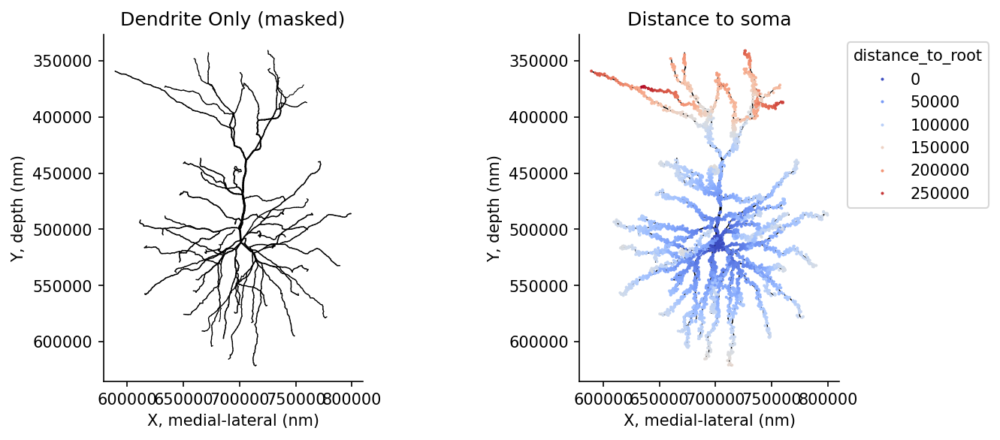
It is worth keeping in mind that connectivity is more than a binary.
4. Synapse Distribution by Cell Type
Taking this connectivity information from one neuron, quantify the synapses it makes onto all cell types. This is the same process that happens to make the Dash App plots.
Note: here we work with only unique connections, even where there is more than one synapse between them
#Figure 14: Unique output connectivity
# First, find the unique postsynaptic partners
unique_postsyn_partners = pre_syn_df.post_pt_root_id.unique()
# Select the cell types of the postsynaptic partners
ct_postsyn_partners = cell_types_df.loc[cell_types_df.pt_root_id.isin(unique_postsyn_partners)]
# Make a bar plot of the connections to the postsynaptic cell types
ct_summary = (pd.DataFrame(ct_postsyn_partners.value_counts('cell_type'))
.sort_values('cell_type')
.reset_index()
)
f, ax = plt.subplots(1,1, figsize=(6, 6),dpi=150)
sns.barplot(ct_summary, x='cell_type', y='count', hue='cell_type', palette='tab20', ax=ax)
# Add labels to the bars
for i, r in ct_summary.iterrows():
ax.text(i, r['count']-.1, round(r['count'], 2),
color='white', ha='center', va='top')
plt.ylabel('Count of unique connections', fontsize = 12, labelpad=12)
plt.xlabel('Cell Type, Postsynaptic (all cells)', fontsize = 12, labelpad=12)
plt.xticks(rotation=-30, ha='left')
sns.despine()
plt.show()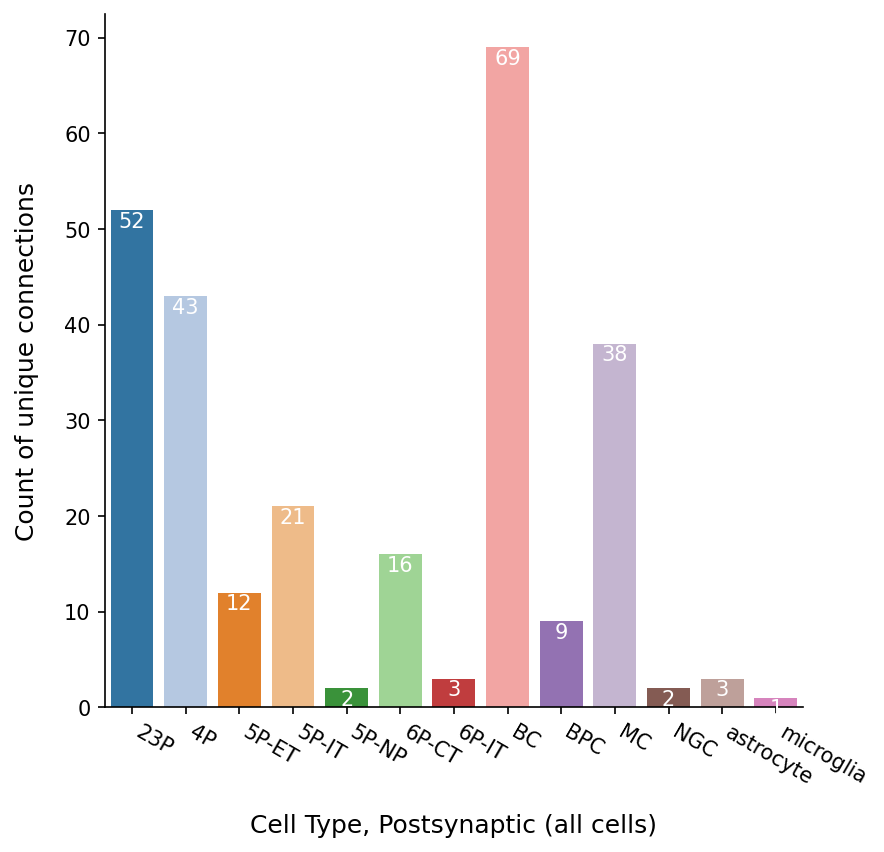
Student task 5: Can you create a similar graph for inputs? Copy-paste is allowed and encouraged
Hint: how do you invert this line:
unique_postsyn_partners = pre_syn_df.post_pt_root_id.unique()to get: unique_presyn_partners
# First, find the unique postsynaptic partners
unique_presyn_partners = post_syn_df.pre_pt_root_id.unique()
# Select the cell types of the postsynaptic partners
ct_presyn_partners = cell_types_df.loc[cell_types_df.pt_root_id.isin(unique_presyn_partners)]
# Make a bar plot of the connections to the postsynaptic cell types
ct_summary = (pd.DataFrame(ct_presyn_partners.value_counts('cell_type'))
.sort_values('cell_type')
.reset_index()
)
f, ax = plt.subplots(1,1, figsize=(6, 6),dpi=150)
sns.barplot(ct_summary, x='cell_type', y='count', hue='cell_type', palette='tab20', ax=ax)
# Add labels to the bars
for i, r in ct_summary.iterrows():
ax.text(i, r['count']-.1, round(r['count'], 2),
color='white', ha='center', va='top')
plt.ylabel('Count of unique connections', fontsize = 12, labelpad=12)
plt.xlabel('Cell Type, Postsynaptic (all cells)', fontsize = 12, labelpad=12)
plt.xticks(rotation=-30, ha='left')
sns.despine()
plt.show()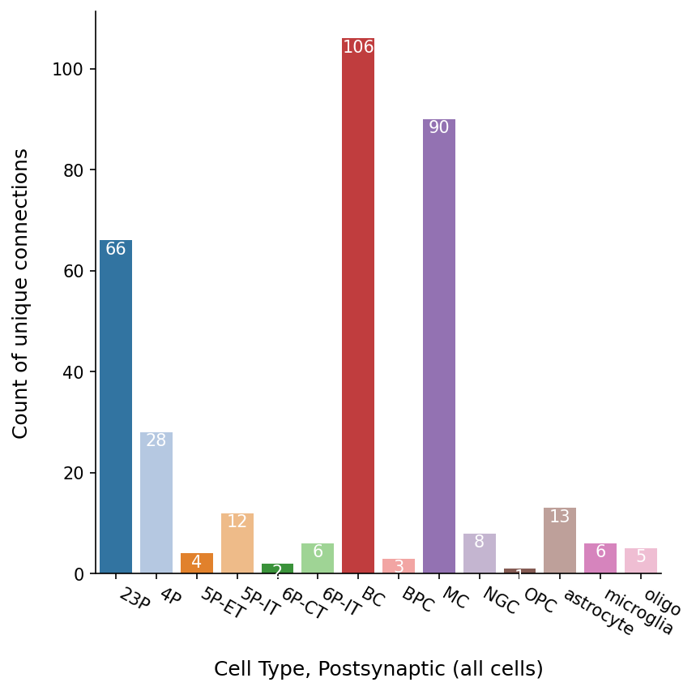
Bonus Part 6: Advanced Neuroglancer
You can actually overlay many of these properties in neuroglancer, including:
- Skeletons: https://spelunker.cave-explorer.org/#!middleauth+https://global.daf-apis.com/nglstate/api/v1/6025750544121856
- Nucleus segmentation: https://spelunker.cave-explorer.org/#!middleauth+https://global.daf-apis.com/nglstate/api/v1/4846103861133312
- Cell Types: https://spelunker.cave-explorer.org/#!middleauth+https://global.daf-apis.com/nglstate/api/v1/5505896963637248
- Proofreading Status: https://spelunker.cave-explorer.org/#!middleauth+https://global.daf-apis.com/nglstate/api/v1/5626062229733376
- Synapses: https://spelunker.cave-explorer.org/#!middleauth+https://global.daf-apis.com/nglstate/api/v1/6395755509055488
And any combination thereof. Tip: drag layers between diferent neuroglancer windows to view overlaid
Further resources:
In the repository for this data access tutorial, there is also
- Programmatic generation and parsing of neuroglancer states :
Tutorial_NGLUI.ipynb - Preprocessing used to collate the cell types information :
_preprocessing_celltypes_v1718.ipynb
Furter documentation
- MICrONS Tutorials : https://tutorial.microns-explorer.org/
- Connectome Annotation Versioning Engine CAVE : https://www.caveconnecto.me/CAVEclient/tutorials/
- Ossify : https://csdashm.com/ossify/